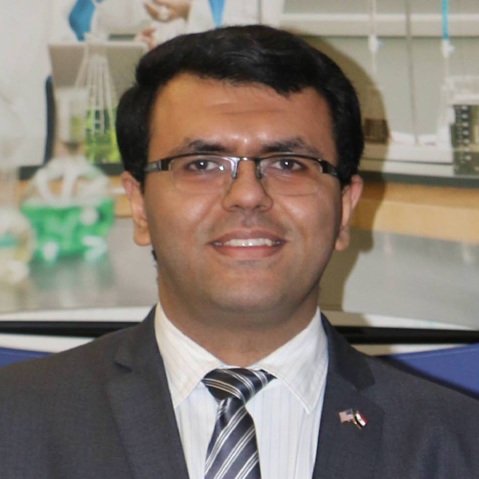

Alison Schram, MD
Chair
Alison Schram is a medical oncologist at Memorial Sloan Kettering Cancer Center. Her research develops molecularly targeted treatments through early-phase, biomarker-driven clinical trials.
Chair
Alison Schram is a medical oncologist at Memorial Sloan Kettering Cancer Center. Her research develops molecularly targeted treatments through early-phase, biomarker-driven clinical trials.
Director
Marcia Horn is Director of NRG1 Energizers and president and CEO of ICAN. Her advocacy includes patient navigation, molecular profiling, clinical trial matching, expanded access, public policy, and health equity.

Research Director
Ashraf Abdelghany directs research at ICAN and supports its biomarker organizations. He earned his medical degree at Al-Azhar University and works on international research projects.

Director of Oncology Nursing
Carmi Fazio is a registered nurse specializing in oncology and end-of-life care. At ICAN, she counsels patients about symptoms, treatment side effects, and pain management.

Senior Patient Advocate
Kristen Leniz is a board-certified health coach and ICAN patient advocate. Her advocacy began after her mother was diagnosed with an EGFR exon 20 mutation.

Senior Patient Advocate
Susan Johnson became involved with ICAN after caring for her husband through cancer. She helps patients and families navigate medical systems and find support resources.
Patient Advocate
Genessa Kahn is a pre-medical undergraduate student majoring in biology and business at the Macaulay Honors College at CUNY, Hunter College, New York. Genessa began working with ICAN in 2020 while in high school.